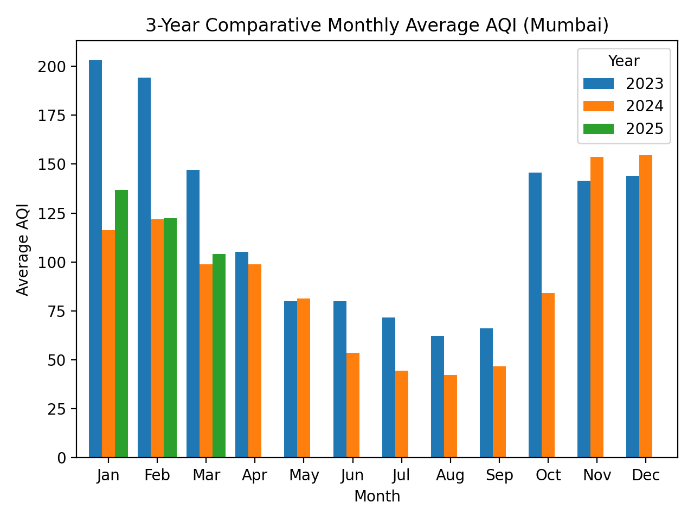

Data Visualization of Mumbai's Air Quality (2023-2025)
This project, submitted as part of the B.Sc. Computer Science curriculum, analyzes three years of air quality data for Mumbai. The goal is to identify trends, seasonal patterns, and the primary pollutants affecting the city's environment.
Project Overview
Using public data from the Central Pollution Control Board (CPCB), we have processed and visualized key metrics to tell a story about the air we breathe. The full set of interactive visualizations can be found on the Dashboard page.
